GIT Ariketa 5.1.1
Contenido completo del documento original del ejercicio.
GIT Ariketa 5.1.1
Crea la carpeta ariketa5.1.1-tuNombreApellido (ej: ariketa5.1.1-IgorGoikoetxea).
Convierte esa carpeta en repositorio.
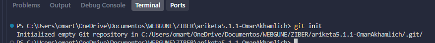
Dentro crea un README.md con el siguiente texto:
¿Con qué comando se pueden ver los cambios? ¿Con qué color se muestran los cambios?
git diff muestra los cambios realizados, en verde muestra las líneas añadidas y en rojo las eliminadas.
También puede usarse git status, para ver que archivos no están en el estado stage.
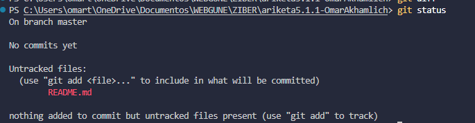
Pasa el README.md a stage. ¿Con qué comando se puede ver el estado del fichero? ¿Con qué color aparece el fichero?
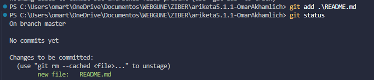
Borra el fichero README.md.
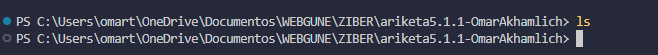
¿Con qué comando recuperarías el fichero README.md?
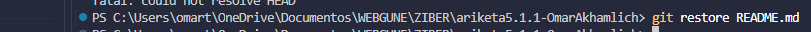
Crea un primer commit con el siguiente mensaje: “README creado”.
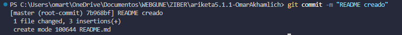
¿Con qué comando se puede visualizar la información de ese commit? Explica la información que aparece en la pantalla.
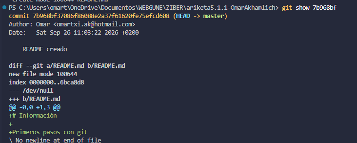
Con git show [hash_del_commit], un usuario puede encontrar la siguiente información del commit: Autor, fecha, mensaje del commit e incluso que ha modificado dentro del archivo.
Crea un index.html, pásalo stage y crea un segundo commit con el siguiente texto: “añadido un index.html”
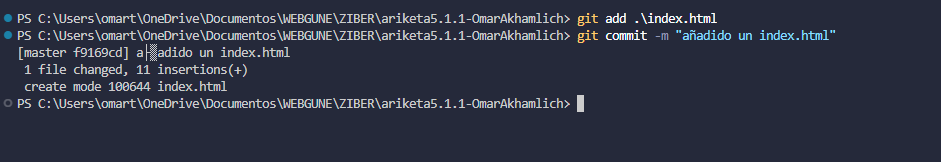
Dentro del repositorio crea una nueva carpeta llamada logs. Dentro de esta carpeta crea los ficheros: hoy.log y historia.log.
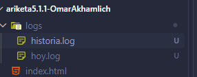
¿Cómo se puede hacer para que GIT no tenga en cuenta los ficheros .log?
Usando el archivo .gitignore, aqui añades *.log y asi git dejara de rastrear TODOS los archivos .log. Hay que tener en cuenta que eso solo funciona una vez creado el archivo, si ya existe algun commit de algun log este no desaparecera.
Comprueba que efectivamente GIT no tiene en cuenta los cambios realizados sobre esos ficheros. Por ejemplo, haz un cambio sobre uno de los dos ficheros .log y ejecuta un git status.
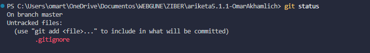
Borra de manera segura el fichero index.html y haz un commit con este cambio con su correspondiente mensaje.
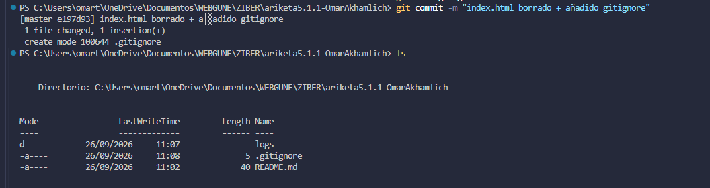
¿Mediante qué comando/s se puede recuperar este fichero? Recuperálo y haz commit con el cambio.
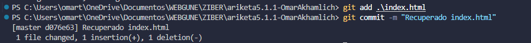